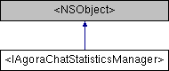

|
ShengwangChatSDK 1.3.2
|
#import <IAgoraChatStatisticsManager.h>

构造函数 | |
| (AgoraChatMessageStatistics *_Nullable) | - getMessageStatisticsById: |
| (NSInteger) | - getMessageCountWithStart:end:direction:type: |
| (NSInteger) | - getMessageStatisticsSizeWithStart:end:direction:type: |
The protocol that defines statistical operations of message traffic.
This protocol contains methods that are used to calculate the number of local messages of certain types sent and/or received in a specified period, as well as their traffic.
This traffic statistics function is disabled by default. To use this function, you need to enable it by setting AgoraChatOptions#enableStatistics prior to the SDK initialization. The SDK can collect statistics of messages that are sent and received after this function is enabled.
The SDK only calculates the traffic of messages that are sent and received within the last 30 days after the traffic statistics function is enabled.
The message traffic is calculated as follows:
The SDK only measures the traffic of local messages, but not the actual message traffic. Generally, the calculated traffic volume is smaller than the actual traffic because of the following:
|
required |
Gets the count of messages of certain types that are sent and/or received in a specified period.
| startTimestamp | The starting timestamp for statistics. The unit is millisecond. |
| endTimestamp | The ending timestamp for statistics. The unit is millisecond. |
| direction | The message direction. |
| type | The message type. |
0 is returned in the case of a call failure.
|
required |
Gets the message traffic statistics by message ID.
| messageId | The message ID. |
|
required |
Gets the total traffic amount of messages that meet the statistical conditions.
The traffic is measured in bytes.
| startTimestamp | The starting timestamp for statistics. The unit is millisecond. |
| endTimestamp | The ending timestamp for statistics. The unit is millisecond. |
| direction | The message direction. |
| type | The message type. |
0 is returned in the case of a call failure.